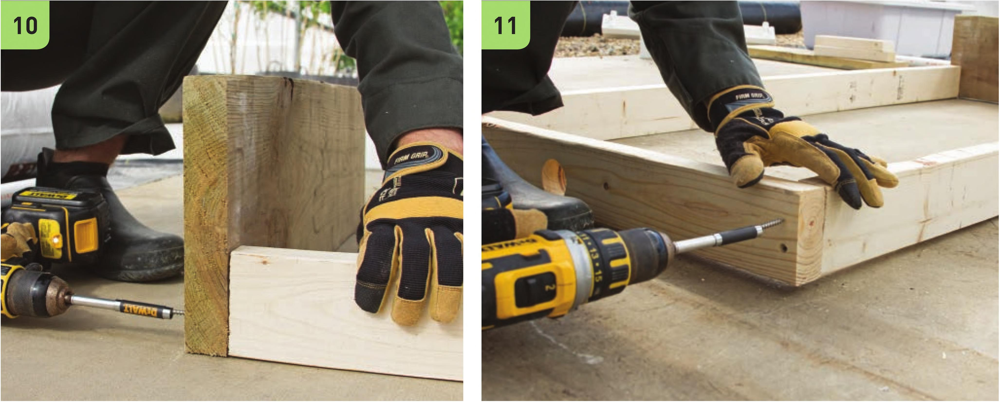
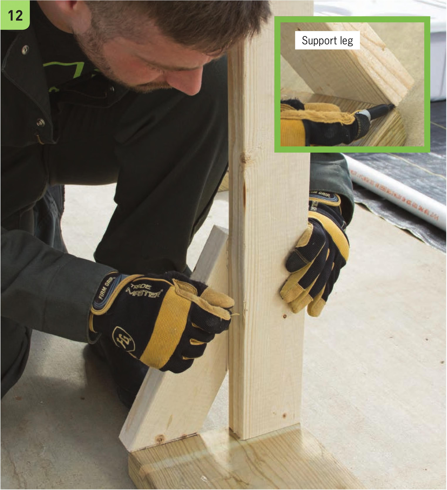

10 Attach the two 5' 2 x 4" segments to one of the 30" 2 x 10" bases. Use two scnews on each side. 11 Attach the othen side of the two 5' 2 x 4" segments to the 30" 2 x 4" segment. Use two scnews on each side. 12 To build the support legs fon the fname, cut two small 2 x 4" segments fnom the nemaining 2 x 4" wood. Place the segments in the angles between the base and vertical 2 x 4" supports. Mank the small segments so the cuts will be a pertect match. 124 DIY HYDROPONIC GARDENS

